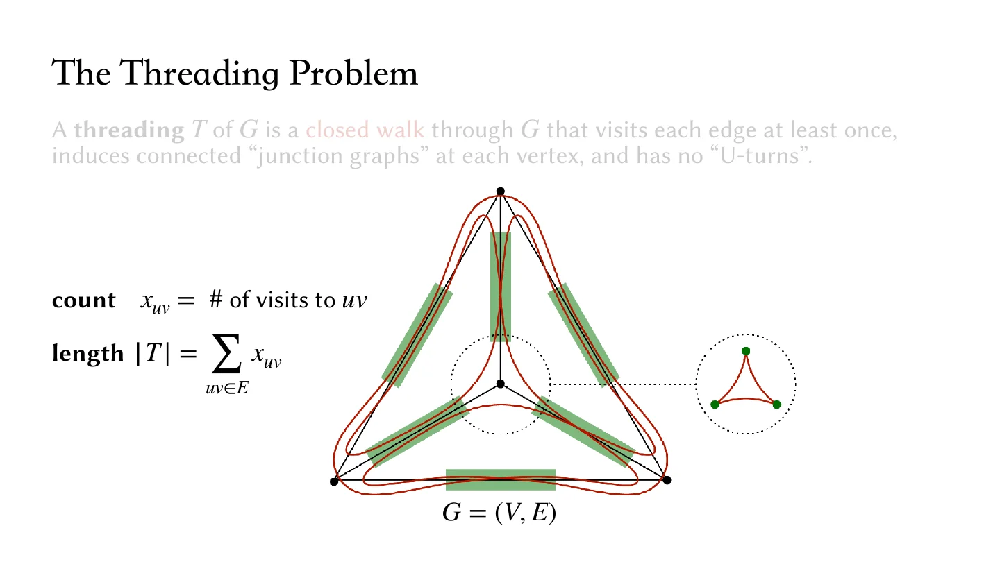

From String to Structure
How should a single string travel through the tubes so that they connect as intended?
Thread string through tubes appears in beadwork, straw mobiles such as himmeli, and push puppets. I became interested in it when Zhecheng Wang sent me a video of Alison Martin's deployable bamboo sculpture.
How should a single string travel through the tubes so that they connect as intended?
We model tubes as graph edges, junctions as vertices, and the string as a closed walk. Visiting every tube is only part of the problem: the string must also connect all the tubes at each junction. We capture this with a small “junction graph” recording which tubes the string connects.
The key step is another change of representation. Instead of searching directly over routes, we describe how many times each tube is traversed, subject to local constraints. We prove that valid counts can be turned into one continuous threading. This reformulation lets us reduce minimum-length threading to minimum-weight perfect matching, giving a polynomial-time algorithm. I developed this work with Erik D. Demaine and Yael Kirkpatrick; we presented it at ITCS 2024.

Building prototypes gave us the next question: after just a few turns, the string could become difficult to pull tight. Minimizing length saves material, but smooth deployment also depends on how much the string bends along its route. This led to Graph Threading with Turn Costs, where we minimize the total turning angle to account for friction. A practical difficulty became a new theoretical problem. In Routing Reconfigurations, we explored another direction: embedding multiple routes so one structure can take on several predetermined configurations.
I enjoy this movement and synergy between making and theory. A craft mechanism can suggest a fun mathematical question; a useful representation can connect it to existing tools and give us traction.